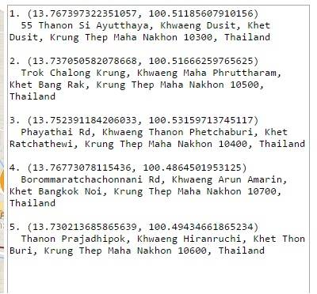
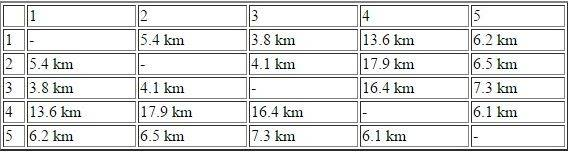

<style>
    .ban_style_ggmap{
        color: white;
        background-color: red;
    }
    .ban_white{
        color: black;
        background-color: white;
    }
    @media only screen and (min-width: 700px) {
        #mapman1 {width: 75%;}
        #mapman2 {width: 50%;}
        #mapman3 {width: 75%;}

        .ban_style {
            padding-top: 10px;
            padding-bottom: 10px;
        }
        .ban_white {
            padding-top: 10px;
            padding-bottom: 10px;
        }
    }
    @media only screen and (max-width: 699px) {
        #mapman1 {width: 100%;}
        #mapman2 {width: 100%;}
        #mapman3 {width: 100%;}
    }
</style>

<ion-view view-title="Google Map">
    <ion-content overflow-scroll="true">
         <div class="rowly ban_style_ggmap">
            <div class="coly-1"></div>
            <div class="coly-10">
                <h2 style="color: white;"><b><span class="now_rap">Travel Saleman Problem</span></b></h2>
                <br/>

                <div class="story_text">

                    &nbsp;&nbsp;&nbsp;&nbsp; เป็นงานเกี่ยวกับการหาระยะทาง ที่วิ่งไปจุดทุกจุดแบบสั้นที่สุด จริงๆแล้วเป็นโปรเจกของเพื่อน ในวิชา OR (Operation Research) ครับ 
                    แต่เพื่อนให้เราช่วย ในส่วนของการเขียน code เพื่อ หาค่าระยะทาง อิงจากถนน ใน google map ของจุด 2 จุด ในรูปแบบตาราง
                    จากนั้น เพื่อนผม จะนำค่าเหล่านี้ ไปคำนวน เพื่อหาระยะทางที่ Optimal ที่สุดครับ โดยใช้สูตร ของ TSP ต่อไป ครับ (พูดง่ายๆ ผมช่วยในส่วนของข้อมูลดิบ) 
                    <br/><br/>
                    <div align='center'>
                        
                        
                        
                    </div>
                    <br/>
                    <b>ความรู้ที่ใช้ : </b>Google Map API , Javascript , Jquery 
                    <br/><br/><br/><br/>
                    
                </div>
            </div>
            <div class="coly-1"></div>
        </div>
    </ion-content>
</ion-view>

